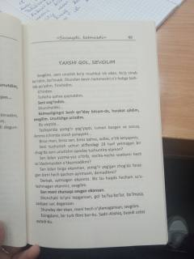

SKQalbi yaralangan oshiqning samimiy va dardli xotiralari bitilgan ta'sirli asar.
Ushbu asar sevgisi javobsiz qolgan, tashlandiq tuyg'ular va hijron azobini boshdan kechirayotgan insonning kechinmalari haqida hikoya qiladi. Kitobda qahramonning o'tgan kunlarni eslashi, qahva ustidagi o'ylari va yo'qotgan muhabbatiga bo'lgan so'nggi so'zlari ta'sirli tarzda bayon etilgan.